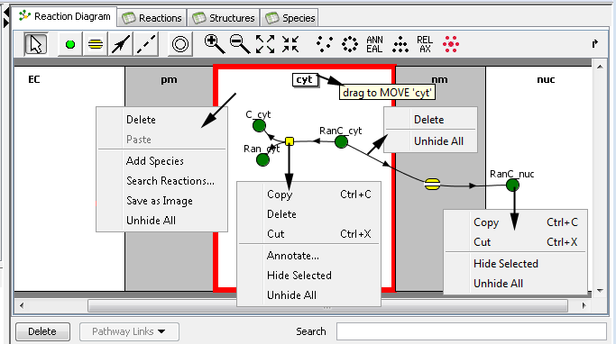
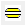
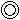

Reactions Diagram View
The reactions diagram shows a bipartite graph of species (green balls) and reactions (yellow squares), each within the appropriate
compartments, and connected by lines showing which species participates in which reaction.

Compartments are depicted as connected rectangles, with membrane compartments separating adjacent volume compartments.
Species are green balls and reactions are yellow squares placed into the compartments. Lines each connect one
species with one reaction: solid lines with arrows denote reactants and products; dashed lines denote catalysts.
Stoichiometric coefficients, if different from one, are displayed next to the appropriate lines.
A toolbar above the graph provides buttons for editing, adjusting zoom, and changing the layout of the elements.
A toolbar at the bottom of graph provides a means to search a text field, delete items, or
use the Pathways Commons database to select species and use the
Pathway Links button.
The tool bar above the graph provides tools for creating and editing species, reactions, and fluxes; selecting the tool alters the
function of the mouse as described below.
enables selection mode. Species (graph nodes) and connecting lines (edges) can be selected
by mouse click, or drag the mouse to select multiple components. Add elements to the selection using the shift key
with the left mouse button, toggle the selection using the control key.
enables adding new species by clicking within a compartment. Preliminary names for species are generated
automatically, but can be changed immediately in the species property panel .
 'reaction tool' enables one to create reactants/products of a reaction or membrane flux.
For non-flux reactions, drag the mouse drag to assign reactant or product roles by connecting species or reactions. The direction of
the drag determines whether a reactant or product role is assigned (e.g. dragging from species to reaction
creates a reactant role, dragging from reaction to species creates a product role). No relationship is created
if VCell constraints would be violated, e.g. two reactants cannot be in different volume compartments.
Create a reaction by dragging from species to species (or open space) Create an intermediary
species by dragging from reaction to reaction (or open space).
'reaction tool' enables one to create reactants/products of a reaction or membrane flux.
For non-flux reactions, drag the mouse drag to assign reactant or product roles by connecting species or reactions. The direction of
the drag determines whether a reactant or product role is assigned (e.g. dragging from species to reaction
creates a reactant role, dragging from reaction to species creates a product role). No relationship is created
if VCell constraints would be violated, e.g. two reactants cannot be in different volume compartments.
Create a reaction by dragging from species to species (or open space) Create an intermediary
species by dragging from reaction to reaction (or open space).

'membrane flux tool' creates a membrane flux by clicking in a membrane compartment. Add flux participants by selecting
the 'reaction tool' and dragging, first from an existing species to the newly created flux component then click and drag again from the flux component
to another existing species.
creates a catalyst, by dragging from a species to a reaction or vice versa. Connecting a species with
empty space creates a new reaction and connecting a reaction to empty space creates a new species.

inserts a new compartment by clicking between existing structures or appends new compartments to the ends.
dashed vertical lines appear on the reaction diagram to indicate where compartments can be added.
 buttons vary the display magnification of the reaction diagram.
buttons vary the display magnification of the reaction diagram.
The layout buttons automatically arrange the components (graph elements) by different algorithms.
These include (from left to right) random, within an ellipse within each compartment, so that most lines point downward, to make lines
shorter and more similar to each other in lengths, and to place nodes more evenly across each compartment.
The mouse popup menu provides several functions depending on the current selection (compartment,reactions,species):
- Save snapshot image of whole reaction diagram to file (zooming reaction diagram view increases resolution).
- Search for reactions in public models shared by other VCell users.
- Copy, cut, delete, annotate and 'hide' selected reactions and species.
- Paste copied reactions and species into selected compartments.
- Unhide (make visible) all 'hidden' reactions and species ('Hiding' temporarily removes selected reactions and species from view).
The search text field allows the user to select multiple components that have a similar name.
The delete button deletes selected elements. Delete will fail if a species is connected to a reaction or flux; you must first
delete the reaction or disconnect the species from the reaction.
The Pathway Links button allows the user to follow links from model elements (species, reactions or fluxes) to pathway elements, or to
edit pathway links.
Depending on the type of object selected, the bottom pane of the window displays a
reaction,
structure,
stoichiometry,
species or
structure properties pane